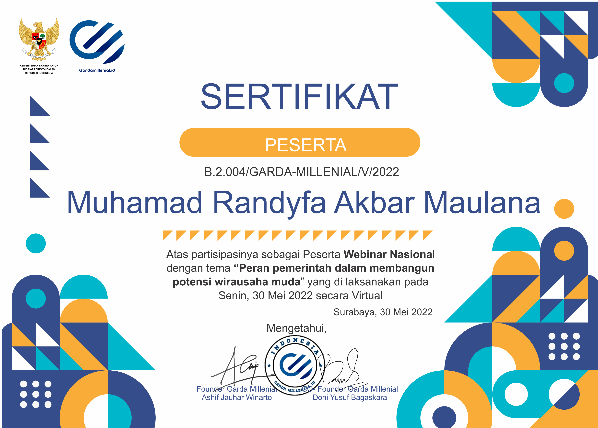
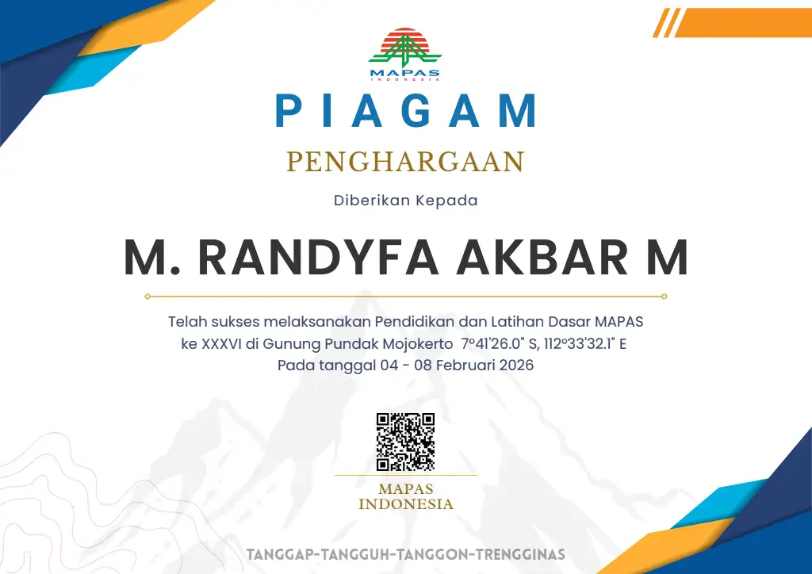

Arsitektur web portofolio personal berkinerja tinggi, responsif, dan terintegrasi otomatis dengan Git Version Control & GitHub Pages CI/CD.
Buka detail proyek →DOOM!!
JOYBOY

Muhamad Randyfa Akbar Maulana
Mahasiswa Sistem Informasi • Asisten Lab • Sekretaris PAC
Institut Teknologi Adhi Tama Surabaya (ITATS) • Surabaya, Jawa Timur
2+ Periode
GMBU Surabaya
7+ Tahun
Pagar Nusa
Aslab Aktif
Lab SI ITATS
6 Tahun
Santri Darul 'Ulum
01 / KARYA & TEKNOLOGI
Featured Projects (Klik untuk Detail)
Analisis kebutuhan sistem informasi, normalisasi data 1NF–3NF, dan pemodelan relasional database untuk efisiensi kueri transaksi.
Buka detail proyek →Penyusunan modul instruksional praktikum komputasi, validasi studi kasus, dan pendampingan penyelesaian kendala logika pemrograman mahasiswa.
Buka detail proyek →
02 / REKAM JEJAK INTERAKTIF
Interactive Journey Timeline (2018 – 2030)
Asisten Laboratorium & Mahasiswa S1 Sistem Informasi
2026 – SekarangInstitut Teknologi Adhi Tama Surabaya (ITATS)
Menjalani perkuliahan S1 Sistem Informasi sekaligus mengabdi sebagai Asisten Lab: memandu praktikum Basis Data, Pemrograman, serta asistensi komputasi laboratorium.
Sekretaris PAC Pencak Silat Pagar Nusa
2025 – 2030Pimpinan Anak Cabang (PAC) Pagar Nusa
Memimpin tata kelola kesekretariatan resmi, pengarsipan berkas organisasi, persuratan hierarki organisasi, serta koordinasi aktif lintas tingkatan ranting.
IT Support — Event Technology & Reses DPR RI
Desember 2024 – Agustus 2025PT. DLU (di bawah Manajer IT) — Mengawal Kegiatan Reses Bapak Bambang Haryo Soekartono (DPR RI Komisi VII) di Surabaya & Sidoarjo
Bergabung dengan tim IT PT. DLU di bawah supervisi langsung Manajer IT. Ditugaskan khusus mengawal kebutuhan teknologi kegiatan reses Bapak Bambang Haryo Soekartono (Anggota DPR RI Komisi VII) di wilayah Surabaya dan Sidoarjo. Bertanggung jawab atas kesiapan sound system, layar presentasi, dan troubleshooting teknis selama acara—memastikan zero downtime di setiap lokasi.
Pengurus GMBU Kota Surabaya, QC & Manajemen Operasional
2023 – 2024Garda Muda Bibit Unggul (GMBU) Kota Surabaya, CV. Shafa Multimedia & Unit Usaha Mandiri
Aktif dalam 2 periode kepengurusan Garda Muda Bibit Unggul (GMBU) Kota Surabaya. Bekerja sebagai Quality Control (QC) percetakan di CV. Shafa Multimedia serta mengelola manajemen operasional dan arus kas unit usaha mandiri. Dipercaya menjadi Master of Ceremony (MC) pada program kerja internal GMBU yang diselenggarakan di DPRD Kota Surabaya, memimpin jalannya acara formal dan memastikan protokoler berjalan lancar.
Customer Service Representative
2022 – 2023WAKi International Group
Memberikan konsultasi produk berstandar internasional, menangani negosiasi pelanggan, mediasi kendala secara solutif, serta menjaga tingkat retensi klien.
Anggota Aktif Perguruan Pencak Silat Pagar Nusa
2018 – SekarangPencak Silat Pagar Nusa Indonesia
Menempa ketahanan fisik, mentalitas kepemimpinan, kedisiplinan seni bela diri tradisional, serta nilai-nilai kekeluargaan dan dedikasi pengabdian masyarakat.
Pendidikan Karakter & Keilmuan Pesantren (6 Tahun)
Mondok 6 TahunPondok Pesantren Darul 'Ulum (Rejoso, Peterongan, Jombang)
Menempuh masa studi dan pendidikan selama 6 tahun di Pondok Pesantren Darul 'Ulum Jombang. Memperdalam pemahaman ilmu agama, pembentukan akhlak karimah, kemandirian hidup berasrama, kedisiplinan, serta menanamkan prinsip integritas dan niat tulus agar setiap ikhtiar senantiasa bermanfaat bagi sesama.
03 / KOMPETENSI & KEAHLIAN
Keahlian Teknis, Operasional & Kepemimpinan
Sistem Informasi, Data & Rekayasa Web
Sistem Informasi & Analisis
Kemampuan menganalisis kebutuhan sistem informasi, memetakan proses bisnis, dan merancang solusi teknologi yang sesuai dengan kebutuhan organisasi.
Bukti: Mata kuliah Sistem Informasi Manajemen & Analisis Perancangan SI. Studi kasus perancangan sistem informasi akademik dan manajemen inventaris.
Perancangan Basis Data (SQL/MySQL)
Kemampuan merancang database relasional (ERD), normalisasi data 1NF–3NF, dan menulis query SQL untuk efisiensi transaksi.
Bukti: Asisten Lab SI ITATS (praktikum Basis Data). Proyek perancangan database dengan normalisasi dan integritas referensial.
Git & GitHub (Version Control)
Kemampuan mengelola versi kode dengan Git, berkolaborasi via GitHub, dan mengintegrasikan repositori dengan GitHub Pages untuk deployment otomatis.
Bukti: Portofolio ini sendiri di-deploy via GitHub Pages (GitHub Actions CI/CD).
IT Support & Troubleshooting
Kemampuan memberikan dukungan teknis, mendiagnosis masalah, dan menyelesaikan troubleshooting secara sistematis—dari identifikasi gejala hingga solusi.
Bukti: PT. DLU (Desember 2024 – Agustus 2025): Mengawal kegiatan reses Bapak Bambang Haryo Soekartono (DPR RI Komisi VII) di Surabaya & Sidoarjo. Memastikan sound system dan layar presentasi siap, menguji perangkat, dan standby troubleshooting dengan zero downtime.
Event Technology Setup
Kemampuan merancang, memasang, dan mengonfigurasi perangkat teknologi untuk acara—mencakup audio (sound system), visual (layar presentasi), dan konektivitas.
Bukti: PT. DLU: Setup sound system & layar presentasi di Surabaya & Sidoarjo. MC GMBU di DPRD Kota Surabaya: memahami alur acara dari sisi teknis & manajerial.
Manajemen Operasional & Mutu
Quality Control & Inspeksi Mutu
Kemampuan menguji standar mutu hasil produksi, memastikan ketepatan kalibrasi, dan memverifikasi barang jadi sebelum dikirim ke pelanggan.
Bukti: CV. Shafa Multimedia (2023–2024): Quality Control percetakan—menguji standar mutu, kalibrasi warna, dan verifikasi barang jadi.
Customer Relationship Management (CRM)
Kemampuan membangun dan menjaga hubungan dengan pelanggan, menangani keluhan secara solutif, dan menjaga tingkat retensi klien.
Bukti: WAKi International Group (2022–2023): Customer Service Representative—konsultasi produk berstandar internasional, negosiasi, dan mediasi kendala pelanggan.
Manajemen Operasional
Kemampuan mengelola operasional harian, persediaan logistik, dan tata kelola arus kas untuk efisiensi unit usaha.
Bukti: Unit Usaha Mandiri (2023–2024): Mengelola manajemen operasional, persediaan logistik, dan arus kas keuangan harian.
Administrasi & Kesekretariatan
Kemampuan mengelola arsip, surat-menyurat resmi, dan tata kelola kesekretariatan organisasi secara terstruktur.
Bukti: Sekretaris PAC Pagar Nusa (2025–2030): Memimpin tata kelola kesekretariatan, pengarsipan, dan persuratan hierarki organisasi.
Technical Documentation
Kemampuan menulis dokumentasi teknis yang jelas—SOP, modul pelatihan, panduan pengguna, dan troubleshooting guide.
Bukti: Asisten Lab SI ITATS: Menyusun modul praktikum komputasi. PT. DLU: Menyiapkan SOP setup teknis untuk kegiatan reses DPR RI.
Microsoft Office & Google Workspace
Kemampuan menggunakan Word/Docs (dokumen), Excel/Sheets (data & laporan), PowerPoint/Slides (presentasi), dan Drive (kolaborasi cloud).
Bukti: QC CV. Shafa (Excel untuk laporan mutu). Administrasi PAC (Word untuk surat resmi). MC GMBU (PowerPoint untuk materi presentasi).
Kepemimpinan & Interpersonal
Kepemimpinan Organisasi
Kemampuan memimpin tim, mengambil keputusan, dan mengoordinasikan anggota untuk mencapai tujuan organisasi.
Bukti: Sekretaris PAC Pagar Nusa (2025–2030). Pengurus GMBU Surabaya 2 periode (2023 & 2024). Anggota aktif HIMSI ITATS.
Public Speaking & MC
Kemampuan berbicara di depan publik, memandu acara formal, dan menyampaikan informasi dengan jelas dan percaya diri.
Bukti: MC program kerja internal GMBU di DPRD Kota Surabaya—memimpin acara formal dan memastikan protokoler berjalan lancar.
Event Coordination & Stage Management
Kemampuan mengoordinasikan acara dari persiapan hingga selesai—mengatur alur, timing, dan kolaborasi antar tim.
Bukti: MC GMBU di DPRD Surabaya: mengatur alur acara formal. PT. DLU: mengoordinasikan setup teknis di dua lokasi (Surabaya & Sidoarjo).
Stakeholder Communication
Kemampuan berkomunikasi efektif dengan berbagai level stakeholder—dari staf teknis hingga manajerial dan pejabat publik.
Bukti: PT. DLU: berkoordinasi dengan Manajer IT dan tim Bapak Bambang Haryo Soekartono (DPR RI). MC GMBU di DPRD Surabaya: berinteraksi dengan tamu undangan formal.
Kedisiplinan & Ketahanan Mental
Kemampuan menjaga disiplin, konsistensi, dan ketahanan mental dalam menghadapi tekanan dan tantangan.
Bukti: Pagar Nusa (2018–Sekarang, 7+ tahun): Menempa kedisiplinan seni bela diri. PT. DLU: zero downtime di bawah tekanan acara reses DPR.
Kegiatan Alam Bebas (MAPAS)
Kemampuan bertahan di alam bebas, bekerja dalam tim, dan mengembangkan kepemimpinan melalui kegiatan outdoor.
Bukti: Anggota aktif MAPAS Indonesia. Pendidikan & Latihan Dasar MAPAS ke XXXVI di Gunung Pundak Mojokerto (2026).
04 / SERTIFIKAT & KREDENSIAL
Sertifikat & Pencapaian
Sertifikat Digital (PNG)
✓ Terverifikasi

Webinar Nasional Garda Millenial
Sertifikat partisipasi sebagai Peserta Webinar Nasional "Peran Pemerintah dalam Membangun Potensi Wirausaha Muda" (2022).

Piagam (PNG)
✓ Terverifikasi

Pendidikan & Latihan Dasar MAPAS
Piagam penghargaan atas keberhasilan melaksanakan Pendidikan dan Latihan Dasar MAPAS ke XXXVI di Gunung Pundak Mojokerto (2026).

Google Drive Cloud
✓ Arsip Resmi
Sertifikat & Portofolio Lengkap
Penyimpanan arsip digital dokumen sertifikat lanjutan dan kredensial resmi terintegrasi pada Google Drive.
PRINSIP & NILAI KEHIDUPAN
Kalam Hikmah
“Banyak orang gagal menjadi orang kaya, karena dari niatnya memang tidak akan bermanfaat bagi sesama. Saya sering berpesan ketika bekerja harus punya niat tulus yang menimbulkan manfaat bagi dirinya sendiri dan orang banyak. Bekerja apa saja, asal bermanfaat. Hasilnya pasti berbeda.”